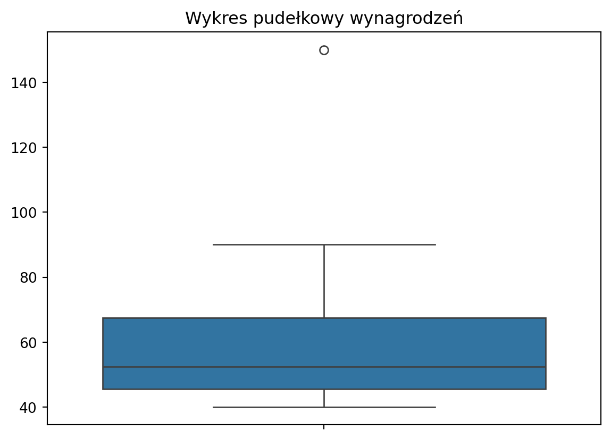

Zanim zaprojektujesz rozwiązanie problemu biznesowego, warto zastanowić się nad złożonością Twojego problemu.
Klasyfikacja algorytmów
1. Algorytmy przetwarzające duże ilości danych
Przetwarzanie ogromnych zbiorów danych wymaga odpowiedniego podejścia do ich organizacji i analizy. W sytuacji, gdy ilość danych przekracza dostępną pamięć jednostki obliczeniowej, często stosuje się iteracyjne sposoby ich przetwarzania.
🔹 Przykład: System rekomendacji w e-commerce (np. Amazon, Netflix)
Analizuje ogromne zbiory danych o użytkownikach, ich historii zakupów i oglądanych treści.
Przetwarza dane w sposób iteracyjny (np. strumieniowe przetwarzanie w Apache Spark).
Wykorzystuje algorytmy filtracji kolaboratywnej lub algorytmy grafowe do przewidywania preferencji użytkownika.
🔹 Inne zastosowania:
Analiza logów serwerowych w czasie rzeczywistym (np. wykrywanie ataków DDoS).
Monitoring sieci IoT (np. analiza danych z sensorów w inteligentnym mieście).
2. Algorytmy dokonujące wielu obliczeń
Wymagają dużej mocy obliczeniowej, ale zazwyczaj nie operują na wielkich zbiorach danych. Przykładem może być algorytm wyszukujący dużą liczbę pierwszą. Często wykorzystuje się tutaj podział obliczeń na równoległe procesy w celu optymalizacji wydajności.
🔹 Przykład: Kryptografia i znalezienie dużej liczby pierwszej (np. RSA)
Algorytm generuje bardzo duże liczby pierwsze, które są podstawą dla szyfrowania RSA.
Proces wymaga intensywnych obliczeń, ale nie operuje na ogromnych zbiorach danych.
Często wykorzystywane są metody równoległe, np. algorytm probabilistyczny Millera-Rabina do testowania pierwszości.
🔹 Inne zastosowania:
Symulacje fizyczne (np. prognozowanie pogody, modele klimatyczne).
Algorytmy optymalizacyjne (np. znajdowanie najkrótszej trasy w problemie komiwojażera).
3. Algorytmy przetwarzające duże ilości danych i dokonujące wielu obliczeń
Łączą wymagania obu poprzednich typów, potrzebując zarówno dużych zasobów obliczeniowych, jak i obsługi dużych zbiorów danych. Przykładem może być analiza sentymentu w transmisjach wideo na żywo.
🔹 Przykład: Analiza sentymentu w transmisjach wideo na żywo (np. YouTube, Twitch)
Algorytm analizuje zarówno tekst (czat), jak i obraz/wideo w czasie rzeczywistym.
Wymaga zarówno dużych zasobów obliczeniowych (przetwarzanie NLP i CV), jak i obsługi dużej ilości danych.
Może wykorzystywać modele Transformer (np. BERT) do analizy tekstu oraz CNN/RNN do analizy obrazu i dźwięku.
🔹 Inne zastosowania:
Autonomiczne pojazdy (analiza obrazu i decyzje w czasie rzeczywistym).
Wyszukiwanie anomalii w ogromnych zbiorach danych finansowych (np. wykrywanie oszustw bankowych).
Wymiar danych
Aby określić wymiar danych problemu, nie wystarczy podać jedynie ilości miejsca zajmowanego przez dane. Istotne są trzy główne aspekty:
Rozmiar wejścia – oczekiwany rozmiar danych do przetwarzania.
Szybkość narastania – tempo generowania nowych danych podczas działania algorytmu.
Różnorodność struktury – typy danych, jakie algorytm musi obsłużyć.
Wymiar obliczeniowy
Dotyczy zasobów procesowania i mocy obliczeniowej. Na przykład algorytmy uczenia głębokiego (DL) wymagają dużej mocy obliczeniowej, dlatego warto zapewnić zrównolegloną architekturę, wykorzystującą GPU lub TPU, co znacząco przyspiesza obliczenia.
Wyjaśnialność algorytmów
W wielu przypadkach modelowanie jest wykorzystywane w sytuacjach krytycznych, np. w oprogramowaniu do podawania leków. W takich sytuacjach kluczowe staje się wyjaśnienie przyczyny każdego wyniku działania algorytmu. Jest to konieczne, aby zapewnić, że decyzje podejmowane na jego podstawie są wolne od błędów i uprzedzeń.
Zdolność algorytmu do wskazania mechanizmów generujących wyniki nazywamy możliwością wyjaśnienia. Analiza etyczna stanowi standardowy element procesu walidacji algorytmu.
Uzyskanie wysokiej wyjaśnialności jest szczególnie trudne w przypadku algorytmów uczenia maszynowego (ML) i głębokiego uczenia (DL). Na przykład banki korzystające z algorytmów do podejmowania decyzji kredytowych muszą zapewnić transparentność i wskazać powody wydanej decyzji.
Jedną z metod poprawy wyjaśnialności algorytmów jest LIME (Local Interpretable Model-Agnostic Explanations), opublikowana w 2016 roku. Metoda ta polega na wprowadzaniu niewielkich zmian w danych wejściowych i analizowaniu ich wpływu na wynik, co pozwala określić lokalne zasady podejmowania decyzji przez model.
import numpy as npimport pandas as pdfrom sklearn.model_selection import train_test_splitfrom sklearn.ensemble import RandomForestClassifier#from lime.lime_tabular import LimeTabularExplainer# Wczytanie danych Irisfrom sklearn.datasets import load_irisiris = load_iris()X = iris.datay = iris.target# Podział na zbiór treningowy i testowyX_train, X_test, y_train, y_test = train_test_split(X, y, test_size=0.2, random_state=42)# Trenowanie modelumodel = RandomForestClassifier(n_estimators=100, random_state=42)model.fit(X_train, y_train)# Tworzenie obiektu LIME do interpretacji modelu# explainer = LimeTabularExplainer(X_train, feature_names=iris.feature_names, class_names=iris.target_names, discretize_continuous=True)# Interpretacja losowego przykładu ze zbioru testowego# i = np.random.randint(0, len(X_test)) # Wybór losowego przykładu# exp = explainer.explain_instance(X_test[i], model.predict_proba)# Wyświetlenie interpretacji# exp.show_in_notebook()
Jak działa ten kod? 1. Ładowanie danych i trenowanie modelu
Używamy zbioru Iris, który zawiera 150 przykładów kwiatów z trzema gatunkami:
Setosa
Versicolor
Virginica
Model RandomForestClassifier trenuje się na tych danych.
Tworzenie interpretowalnego modelu za pomocą LIME
LIME generuje lokalne wyjaśnienia, czyli interpretuje model dla pojedynczych predykcji.
Wybieramy losowy przykład z danych testowych.
Eksploracja wyniku dla jednego przykładu
LIME modyfikuje lekko wartości wejściowe i obserwuje, jak zmienia się wynik predykcji.
Tworzy „lokalny” model liniowy, który pokazuje, które cechy miały największy wpływ na decyzję.
Załóżmy, że nasz model wybrał przykładową roślinę i sklasyfikował ją jako Virginica.
Oto interpretacja wyników:
Najważniejsze cechy wpływające na decyzję modelu:
Długość płatka (petal length): największy wpływ na predykcję (np. im większa, tym większe prawdopodobieństwo, że to Virginica).
Szerokość płatka (petal width): również istotny czynnik (np. powyżej pewnej wartości sugeruje Virginica).
Długość kielicha (sepal length): mniejszy wpływ, ale nadal istotny.
Szerokość kielicha (sepal width): zwykle najmniej istotna cecha.
Wizualizacja wyników
LIME generuje wykres słupkowy, który pokazuje wpływ każdej cechy na klasyfikację.
Na wykresie widać, które cechy zwiększały, a które zmniejszały prawdopodobieństwo przypisania do danej klasy.
Co oznacza wynik?
Jeśli model przewidział klasę Virginica z wysokim prawdopodobieństwem, oznacza to, że kluczowe cechy (np. długi płatek) mocno wskazują na ten gatunek.
Jeśli cechy miały zróżnicowany wpływ, oznacza to, że model miał pewne trudności w klasyfikacji (np. szerokość płatka nie była jednoznaczna).
Detekcja anomalii
Wartość odstająca (Outlier)
Wartość odstająca (ang. outlier) to obserwacja (wiersz w tabeli danych), która jest znacznie oddalona od pozostałych elementów próbki. Oznacza to, że zależność między zmiennymi niezależnymi i zależnymi dla tej obserwacji może różnić się od pozostałych przypadków.
Dla pojedynczych zmiennych wartości odstające można określić, korzystając z wykresu pudełkowego (box plot). Wykres ten bazuje na kwartylach:
Pierwszy kwartyl\(Q_1\) i trzeci kwartyl\(Q_3\) wyznaczają boki pudełka,
Drugi kwartyl\(Q_2\) (mediana) jest zaznaczony wewnątrz pudełka,
Przykładem wartości odstającej może być bolid Formuły 1 – pod względem prędkości jest on anomalią wśród zwykłych samochodów.
Wykorzystanie detekcji anomalii
Wykrywanie wartości odstających ma szerokie zastosowanie, np.:
Finanse – wykrywanie transakcji fraudowych w analizie danych bankowych,
Cyberbezpieczeństwo – identyfikacja intruzów w sieci na podstawie zachowań użytkowników,
Medycyna – monitorowanie parametrów zdrowotnych i wykrywanie nieprawidłowości,
Przemysł – wykrywanie wadliwych komponentów poprzez analizę obrazu.
Metody wykrywania anomalii
1. Metody nadzorowane (supervised learning)
Stosowane, gdy mamy oznaczone dane (np. przypadki oszustw w transakcjach).
Sieci neuronowe,
Algorytm K-najbliższych sąsiadów (KNN),
Sieci Bayesowskie.
2. Metody nienadzorowane (unsupervised learning)
Zakładają, że większość danych jest poprawna, a anomalie to niewielki odsetek przypadków.
Klasteryzacja metodą K-średnich (K-Means),
Autoenkodery w sieciach neuronowych,
Testy statystyczne.
Metoda klasyczna – detekcja na podstawie prawdopodobieństwa
Aby określić, czy dana obserwacja jest anomalią, można użyć prawdopodobieństwa \(p(x)\):
Jeśli \(p(x) < \epsilon\), uznajemy wartość za odstającą.
W praktyce zakładamy, że dane mają rozkład normalny\(N(\mu, \sigma)\).
Szacujemy parametry \(\mu\) (średnia) i \(\sigma^2\) (wariancja) na podstawie próbki.
Następnie dla każdej wartości obliczamy prawdopodobieństwo jej wystąpienia i porównujemy z \(\epsilon\).
Przykład: Analiza wynagrodzeń w firmie
Wykrywamy, czy w danej firmie są osoby o wynagrodzeniach znacznie odbiegających od średniej.
Code
import numpy as npimport matplotlib.pyplot as pltimport seaborn as sns# Przykładowe wynagrodzenia w firmie (w tysiącach)salaries = [40, 42, 45, 47, 50, 55, 60, 70, 90, 150] # 150 to outlier# Obliczenie kwartylówQ1 = np.percentile(salaries, 25)Q3 = np.percentile(salaries, 75)IQR = Q3 - Q1# Definicja wartości odstającychoutlier_threshold_low = Q1 -1.5* IQRoutlier_threshold_high = Q3 +1.5* IQR# Znalezienie outlierówoutliers = [x for x in salaries if x < outlier_threshold_low or x > outlier_threshold_high]print(f"Outliers: {outliers}")# Wizualizacjasns.boxplot(salaries)plt.title("Wykres pudełkowy wynagrodzeń")plt.show()
Outliers: [150]

Wynik: Na wykresie pudełkowym widać, że 150 tys. to anomalia.
Isolation Forest – detekcja anomalii za pomocą lasu izolacyjnego
Isolation Forest to algorytm bazujący na drzewach decyzyjnych, zaproponowany przez Fei Tony Liu, Kai Ming Ting oraz Zhi-Hua Zhou w 2008 roku. Identyfikuje anomalie poprzez izolowanie wartości odstających w procesie podziału danych:
Wybiera losowo cechę oraz wartość podziału,
Wartości odstające szybciej zostają odizolowane (są bliżej korzenia drzewa),
Wynik jest agregowany na podstawie wielu drzew.
Jego zalety to niskie wymagania obliczeniowe i skuteczność w analizie wielowymiarowych danych.
Wynik: Transakcja 5000 zł zostanie wykryta jako anomalia.
Business Impact:
Detekcja anomalii to fundament nowoczesnego zarządzania ryzykiem (Risk Management) – od wykrywania nadużyć finansowych po przewidywanie awarii maszyn. Z kolei wyjaśnialność algorytmów (LIME) to konieczność w sektorach regulowanych (bankowość, medycyna, ubezpieczenia). Zrozumienie, “dlaczego system powiedział NIE”, chroni firmę przed stratami wizerunkowymi, prawnymi oraz zapewnia zgodność z regulacjami takimi jak AI Act czy RODO.